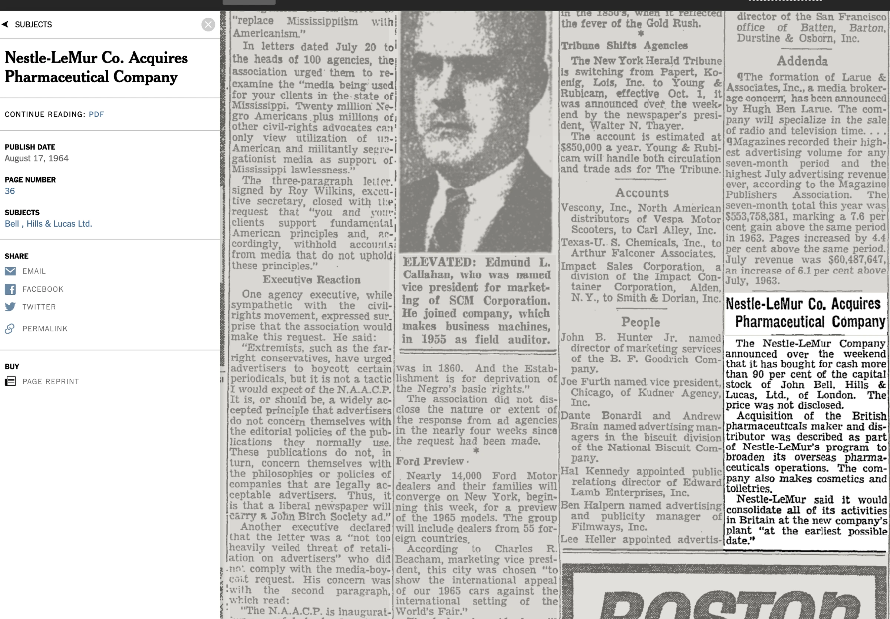

John Bell, Hill & Lucas Ltd. and the International Expansion of Nestlé-LeMur
Historical research into John Bell, Hill & Lucas Ltd. and its acquisition by Nestlé-LeMur during the 1960s. The article explores pharmaceuticals, industrial manufacturing, cosmetics expansion and the broader corporate networks shaping the postwar beauty and consumer goods industries.

Nestlé–LeMur and Corporate Expansion in the 1960s
Explore the 1960s expansion of the Nestlé–LeMur Company, including a documented acquisition and the shift from permanent wave technology to diversified industry


Seaforth and Nestle-LeMur – From Wartime Aftershaves to American Grooming Culture
Explore the history of Seaforth, one of America’s classic men’s grooming brands. From Alfred D. McKelvy and wartime aftershaves to the Nestle-LeMur era and the rise of modern men’s toiletries.

Milkmaid Toiletries and Nestlé-LeMur
Research article on Milkmaid Toiletries, its connection to Lorr Laboratories and its acquisition by Nestlé-LeMur in 1955 as part of the expanding Harriet Hubbard Ayer Division.
Harriet Hubbard Ayer and the Expansion of Nestlé-LeMur into American Cosmetics
Explore how Nestlé-LeMur acquired Harriet Hubbard Ayer in 1954 and expanded beyond hair preparations into the American cosmetics industry during the postwar beauty boom.

Beyond the Permanent Wave: Cosmetic Expansion
Explore how the Nestlé–LeMur Company moved beyond permanent wave technology into cosmetic products, reflecting early expansion into the modern beauty industry.
Pinaud Before, During & After Nestlé-LeMur
Discover the history of Pinaud from nineteenth-century Paris to its transformation under Nestlé-LeMur and the rise of Clubman Pinaud within American grooming and barbershop culture.